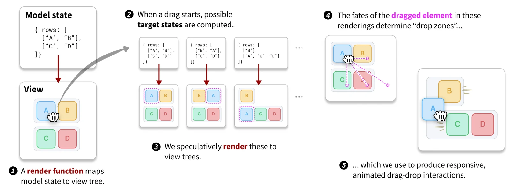
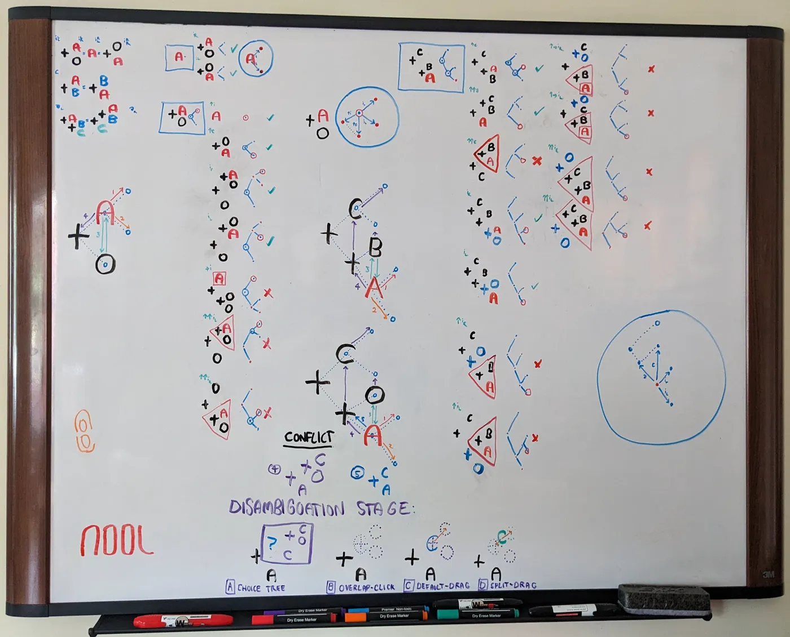

Declarative Dragging
★ Best Paper Award, UIST 2026What if making a diagram draggable was as simple as specifying what it can become?
Drag-and-drop makes the digital graspable. But designing bespoke drag interactions involves a lot of fiddly code to handle geometry, feedback, and animations. As a result, many people, from educators to game designers, mathematicians to creative tool builders, often don't bother.
Declarative dragging inverts the problem. Rather than programming all that visual behavior directly, you simply say, for each element you want to make draggable, which future states of your application dragging it should lead to. Our system speculatively renders those states to work out where things can go, then combines these possible worlds into a smooth, responsive drag-and-drop interaction.
Our goal with this project is to let people who think in abstractions keep working within the semantic worlds they inhabit, while helping them turn the rules of their worlds into rich tactile interactions in ours.
A five-minute video introducing declarative dragging.
How it works
D2 is model-driven: An interface author makes an element draggable by specifying which future model states should be accessible by dragging it. An engine speculatively renders these states to view trees, extracts the position of the dragged element in each of these renderings, and uses these to synthesize a drag-and-drop interaction, all without detailed work required by the interface author.

To provide greater expressive range and customizability, D2 is composable: simple model-driven drag-and-drop behaviors can be combined to create more complex ones, and modifiers can layer features like floating, snapping, and transitions. For more details, see the paper.
Dragology demos
We implemented D2 in a library called Dragology, built for SVG interfaces on the web.
See our demo gallery for many more interactives built with Dragology.
Where it came from
Back in 2022, I had a prototype of a game aimed at making math more tangible, a long-running obsession of mine. It had a lot going for it, but the fundamental mechanic, based on selecting transformations from a menu, lacked the juicy tactility I craved. I eventually came up with a primitive version of what would become model-driven dragging, but implementing it seemed daunting, so it sat on my whiteboard for the next two years, haunting me every time I went to make a sandwich. — Andrew

On a really nice walk in Seattle back in 2023, Andrew shared his draggy ideas with me. I kept thinking about them over the years, but didn't do anything about it. And then last year, it all came together. My buddy Elliot was playing with order-preserving maps between trees. I came up with a fun way to draw these structures, but I realized I didn't just want to draw them – I wanted to reach in and pull them around, and feel out their dynamics (what became the twisted trees demo above). That felt pretty tough, until I remembered Andrew's ideas. I got working on a library that, with Andrew's help, grew into declarative dragging. — Josh
Since the paper
Josh has been working on a variety of new, more intricate mathematical explorables. We've found Dragology particularly suited to interfaces that combine parallel representations, where you see the same system from different perspectives. In the permutation lab below, interacting with any one representation fluidly updates the others, even halfway through a drag, showing their relationships in real time.
Andrew has been working to bring declarative dragging to existing applications, including his research on user interfaces for programming languages, as well as restarting work on the math game concept that kicked it all off.
Cite
@inproceedings{horowitz2026declarative,
title = {Declarative Dragging},
author = {Horowitz, Joshua and Blinn, Andrew and Heer, Jeffrey},
booktitle = {Proceedings of the 39th Annual ACM Symposium on
User Interface Software and Technology (UIST '26)},
year = {2026}
}